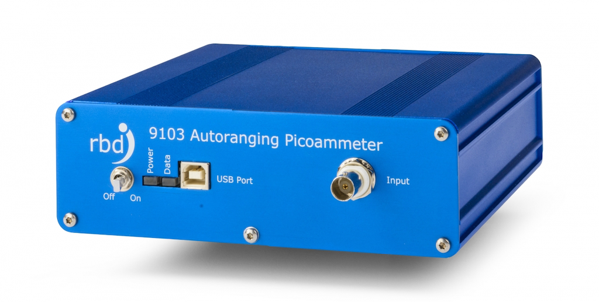

RBD 9103 Picoammeter
Learn how to communicate with the RBD 9103 USB Picoammter using serial communications.

Figure: RBD 9103 USB Picoammater
Communicating with the RBD 9103 Picoammeter in Python
Updated - 16/08/2024
Introduction
The RBD 9103 Autoranging Picoammeter is a USB device capable of measuring currents in the low pA to low mA range. The device has a variety of filter settings that can be used if the data are noisy, and it can produce currents on demand, or deliver them at some selectable rate. While the range can be user-selected, it is recommended to use it in auto-ranging mode.
Communication with the device can be through the software provided, a serial terminal communication program, or through Python using the pyserial library.
Initial Set Up
Please read this in consultation with the user manual:
Once the device driver has been installed the picoammeter can be accessed as a serial device on the PC by reading/writing text commands, or by using the Actual software that comes with it. The Actuel software includes a console that can be used to write and read commands.
Alternatively I used the Termite serial communication software for testing.
Which COM port?
To use in termite or Python we must first find out what COM port it is on. Do this by looking for FT232R USB UART in Windows (7) Devices and Printers, double click on it and select Hardware and we see the COM port (COM3 when I tested this one). If you are having problems I recommend this as a fallback to see what the device is doing.
Alternatively: use pyserial (see Python section below):
PySerial has a useful command which lists active com ports (from Python):
which will produce output like:
COM Port Configuration
To establish serial communications with the device we need to have the right settings, from the manual (Communications and Command Reference):
| Setting | Value |
|---|---|
| Bits per Second (Baud Rate) | 57600 |
| Data Bits | 8 |
| Parity | None |
| Stop Bits | 1 |
| Flow Control | None |
Essential Commands
The most useful commands for talking to the device are:
| Command | Use |
|---|---|
| &Q | Query Current Configuration (returns multiple lines) |
| &RX | Set range, ‘0’ is auto range, for others see manual (returns a single line) |
| &FXXX | Sets the filter time constant, allowed values are: ‘000’, ‘002’, ‘004’, ‘008’, ‘016’, ‘032’, and ‘064’. (returns a single line) |
| &IXXXX | Sets the data sample interval in ms (‘0015’ to ‘9999’), ‘0000’ turns off sampling |
| &S | Reguest a sample (returns a single line) |
| &VX | Set number of digits (‘5’, ‘6’, ‘7’ or ‘8’), Default is ‘5’ (returns a single line) |
For other commands see the manual.
Please note you must read the response each time, otherwise when you request data later you will get an earlier response!
The Filter
Note that the value for the filter does not have a default value when the device is switched on - it uses whatever values is stored in its eeprom and you will only know what value it is if you read the device configuration. Therefore, please set the filter value explicitly in your code. Larger values give less-noisy readings but it takes longer for the device to stabilise. You should try different filter values to see which work best for reducing noise in your data.
Python
PySerial
To communicate with a serial device in Python we will use PySerial. PySerial is installed on all lab computers! However, if not installed, on Anaconda Python install with with
Connecting to the Picoammeter
The code below shows how to import pyserial and set up a connection. It is essential to set the timeout as well as otherwise if you try to read the device and it has no data it will block indefinitely.
import serial
ser = serial.Serial(
"com3",
baudrate=57600,
bytesize=serial.EIGHTBITS,
parity=serial.PARITY_NONE,
stopbits=serial.STOPBITS_ONE,
xonxoff=False,
timeout=1, # seconds
)
Some useful PySerial commands (class functions):
write(bytearray) # writes '\n'-terminated byte array to the device
readline() # returns one line
readlines() # returns multiple lines - needs timeoout to be set to know when to end
flush() # flushes the buffer, wait until all data is written
flushInput() # flush input buffer, discarding all its contents
flushOutput() # clear output buffer, aborting the current output and discarding all that is in the buffer.
close() # close the connection
Note
If the connection is open and you try to open it again an error will occur saying something like:
SerialException: could not open port ‘com3’: PermissionError(13, ‘Access is denied.’, None, 5)
Strings and byte arrays
Arrays of bytes are sent to and read from the device. Thus strings must be converted to bytes and vice-versa.
Note
** It is essential to end every write to the device with a newline ('\n')**
To convert a string to bytes use:
where ‘utf-8’ is a common string encoding.
To convert bytes to a string use:
on the bytes array.
Examples below will make clearer.
Useful helper function:
Writing to and reading from the device
Write a command with the PySerial write() command.
After each write use readline() or readlines() to read back the decive’s response, even if you are just
setting some parameter (like the range).
Note
readline()Read a line which is terminated with end-of-line (eol) character ('\n' by default) or until timeout.readlines()Read a list of lines, until timeout. Note that this function only returns on a timeout.
The byte arrays/strings returned are terminated by carriage returns ('\r') and newlines ('\n')
Examples:
# Example: get current configuration
ser.write(data('&Q'))
ser.readlines()
[b'RBD Instruments: PicoAmmeter\r\n',
b'Firmware Version: 01.37\r\n',
b'Build: 5-14-13\r\n',
b'R, Range=AutoR\r\n',
b'I, sample Interval=0000 mSec\r\n',
b'L, Chart Log Update Interval=0200 mSec\r\n',
b'B, BIAS=OFF\r\n',
b'F, Filter=032\r\n',
b'V, FormatLen=8\r\n',
b'CA, Autocal=OFF\r\n',
b'G, AutoGrounding=DISABLED\r\n',
b'Q, State=MEASURE\r\n',
b'P, PID=PHYSICS001\r\n']
To remove trailing ‘\r\n’
As can be seen above, the byte arrays returned have a trailing ‘\r\n’ (carriage return and newline).
Both can be removed once the bytearay is converted to a string using the string .rstrip() function
Reading current samples.
When the '&S' is sent the device returns a byte array that contains information (comma separated)
on the status, range, the current and the scale. This byte array will have to be converted to a string,
have the trailing '\r' and '\n' removed, split and then converted into an appropriate numberic value.
The allowed ranges are ’nA, ‘uA’, ‘mA’, so the range will have to be checked and the numeric value multiplied by the appropriate scale factor.
The first part of the returned command is usually '&S=' but unstable values are reported with an asterix, e,g.
&S*,Range=002mA,+0.0009572,mA
The manual states that after changing the range it may take a few readings before the readings are stable and accurate.
Also, over-range status is indicated by a '>' and under-range status by a '<' after the '&S', so
one should always check the first character after the ‘&S’ to determine the trustworthyness of the results,
and re-read or change the scale (if not on autoranging) and re-read.
If the scale is giving under-range or over-range status then the results cannot be trusted -
in fact the (low and incorrect) current readings given when the picoammeter is in an over-range state
looks exactly like the plateauing expected from saturation in the nuvistor triode experiment.
Also, note that the manual says that the stated accuracy is achieved after 1 hour warm up.
# Example: request a sample:
ser.write(data("&S"))
ans = ser.readline().decode("utf-8").rstrip()
# convert bytes to string and remove trailing newline and CR
print(ans)
It is very straightforward in Python to convert the above into a numeric value for plotting and calculation.
Troubleshooting & Notes
- Remember to end commands sent to the device with a
'\n'and to read the response string. - If the device is giving strange readings (e.g. you get a response (e.g.
&S=,...) and you did not expect this response then the device may be in sampling mode. The suggested procedure is to flush the input, set the sampling interval to0000and then check the response string. If this fixes things then send'&Z'to the device to store the current configuration as device power-on default (i.e. in the eprom). - In one place in the user manual it says that
'&D'is a factory reset. It is not! It simply reloads the default device settings as for power on (i.e. from its eprom) '&PXXXXXXXXXX'sets the 10-character device id.
Jumps in the currents after changing scales
If there are steps/jumps in the picoammeter currents after chagnign scales it is probably due to the zero offset calibratin being incorrect.
The recommended procedure to correct is (thanks Joe Branson!):
- Open Actuel software, this will take priority control of the picoammeter away from python
- If the picoammeter doesn’t register, switch it off and on again and wait for Actuel to recognise it.
- Disconnect the input cable/make sure nothing is connected to the input.
- Open the console using the labelled button in the software.
- Type C1 in the provided box and send the command. Wait for the process to complete (~30 sec)
- Type C0 in the provided box and send the command. Wait for the process to complete (~30 sec)
- Close actuel software and rerun your python script.
Note
If python throws an error you may need to switch the picoammeter off and on again and/or shutdown and restart the jupyter notebook but this isn't always necessary